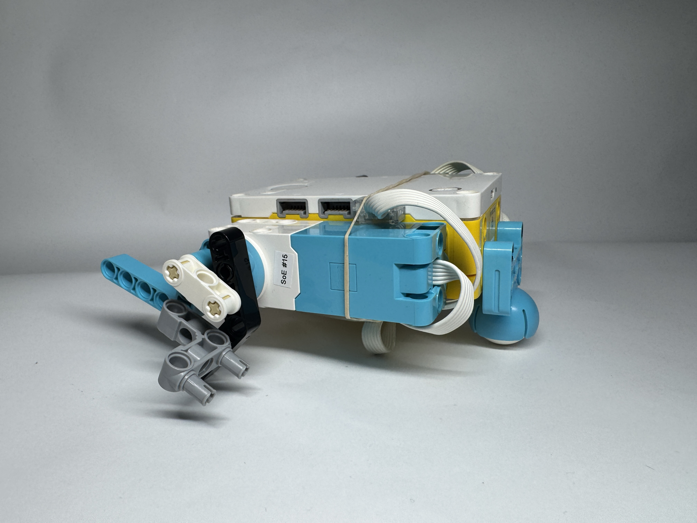

Tasked with designing a Silly Walks Robot without wheels I tested and finalized several designs but ended up with my final design above. I did notice that at slower speeds it flips itself over and moves very erratic and slow. However, as I amp up the motors to its maximum torque, it performs quite well moving at a decent speed and mostly in a straight line.